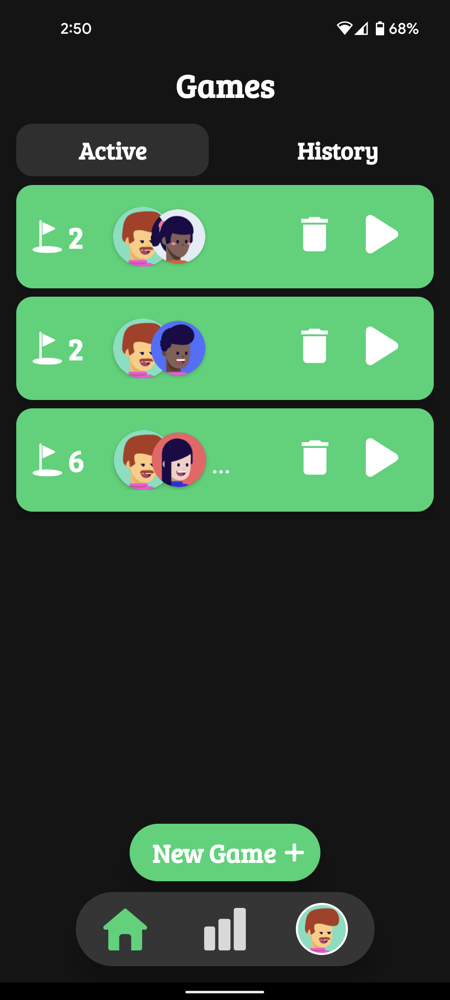
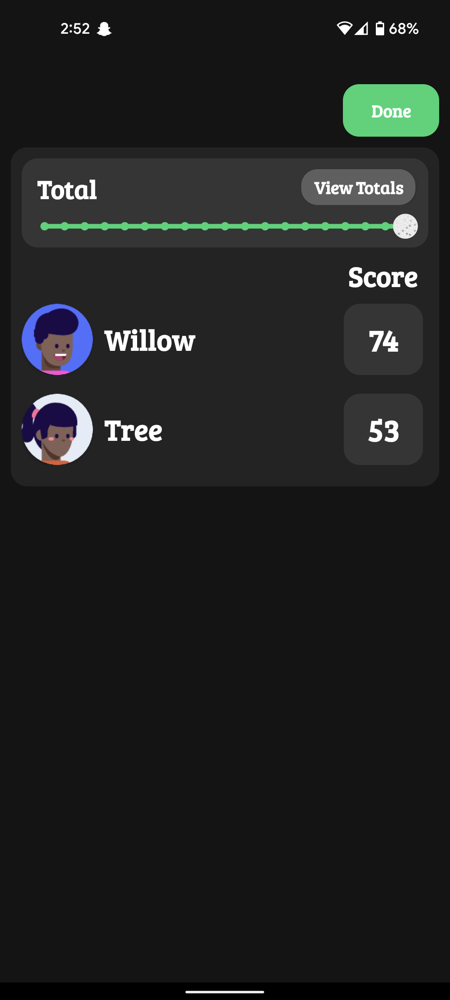
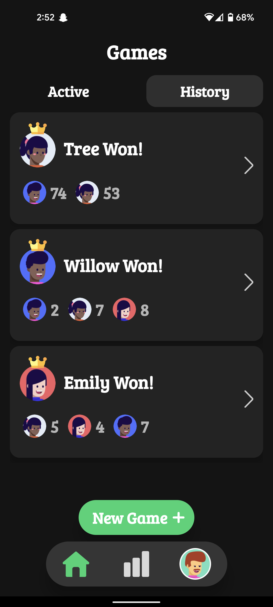

I am a Software Engineer major at Virginia Commonwealth University,
Graduating May 2022. Through Learning Computer Science, I found my
true passion for Game Design. I have Scripted in C#, Modeled, and
Animated for 7+ different projects.
I am also an Online Private Instructor for
iDTech
My job is to teach kids ages 7-17
all things technology. With my students, I have created an android
app, javascript games, java and python applications, and even
minecraft worlds. This year at iDTech I will use my passion for
Game Design to manifest amazing games with these students via UNITY and Maya.
Alerta
ALERTA is a VR experience research project at VCU to help students with ADHD study.
I modeled and animated these flowers in Maya. The flowers bloom
to represent the user's progress as they're studying.
These flowers are then placed in a Virtual Environment
using Unity 3D. The petals are a non-linear bend animation. I used the Alembic
Import tool to get the animation rigged in Unity.
Fun Fact: The start and end key-frames of all petals are
offset to the others an odd amount
to give it natural bloom animation.
Putt Points
I Programmed Putt Points with 3 other VCU students for our software development concentration class. It is a UI & UX friendly
mini golf scoring app.
Putt Points contains profile creation, one-click of a button to keep track of strokes, and a scoreboard to check
the score during the game.
One unique feature we developed is the pause and resume game.
Putt Points also features a history page for when you get in an argument with
whoever you played with last ..."No, I won that game last week!" You can also
review the strokes per hole from a previous game.



FLICKR
FLICKR is a 3D thriller/puzzle video-game where
the player solves puzzles that change with different
lighting... all while it seems like something or someone
is chasing you...
Unity: Walkthrough of first iteration of the map.
The light turns red to represent interaction between
the player and the light post.
Maya : Lightposts that reveal different puzzles,
and/or have something else up their sleeve.
U-Paint
Simple Pixel Art Fun written in HTML, JS, and CSS. The 'pen' is controlled via
W, A, S, D. One fun feature I added using Javascript was to click and
drag on the canvas to paint. Another feature in the works is for the user
to export thier fabulous work with a click of a button.
There are 9 colors that can be selected at the bottom of the page,
or hotkeys 1-9.
A challenge I faced in developing this project was how to structure the canvas,
and keeping track of what pixel the "pen" is currently on. I conquered this by
using a coordinate system and each pixel belonging to its own (X,Y) pair.
Bomb Squad
Developed in UNITY, Bomb Squad is a doge falling objects game.
The Bombs are randomly generated to create infinite replay value.
The score goes up as you stay alive, and high score is displayed.
A challenge I faced in this development was to figure out how to save
highscore for the next playthrough. I used a script to keep track of
the player's state and to save current score when player "dies".